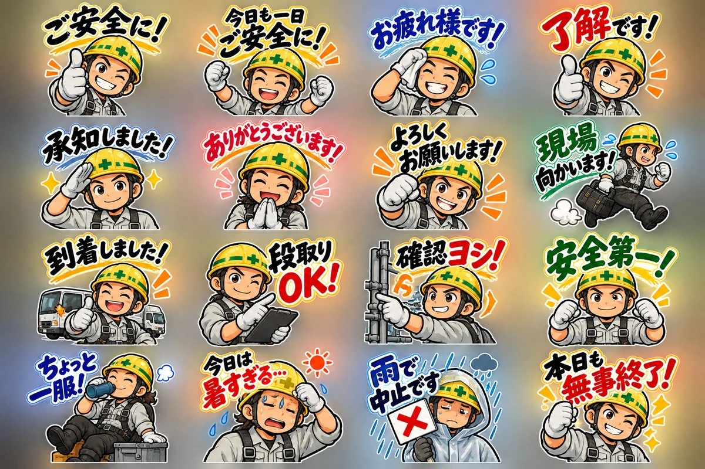

スタンプの作り方が分かった方へ。次は『何を作れば売れるか』です

このページで受け取れるもの
可愛いスタンプがダメなわけではありません。ただ「おはよう」「ありがとう」のような定番の挨拶は、同じようなスタンプが山ほど並んでいます。
これだけ似たものが並ぶと、あなたのスタンプを選ぶ理由がなくなってしまいます。
毎日、職場のLINEで同じ言葉を打っていませんか。その言葉をスタンプにしたい人は、同じ仕事をしている人の数だけいます。
仕事ごとに、その人たちだけが毎日使う言葉があります。
実際に売れているスタンプは、手に取りやすい価格帯で、評価がこれだけついていました。
特別なスキルはいりません
スタンプの検索窓に、あなたの仕事でよく使うフレーズを入れてみます。
言葉が思いつかないときは、このプロンプトでChatGPTに出してもらえます。
私の仕事は【ここに仕事を入れる：例 電気工事士】です。 LINE STOREでスタンプを探すための検索ワードを出したいです。 この仕事の人が、職場のLINEや同僚・取引先とのやりとりでよく使う言葉を20個、短い検索ワードの形で出してください。 条件 ・「おはよう」「ありがとう」などの一般的な挨拶ではなく、この仕事ならではの言葉を優先する ・業界の言い回し、報告のひとこと、現場や職場でのお決まりのフレーズを混ぜる ・1つ10文字以内
検索結果を見て、この3つがそろっていれば穴場です。
ジャンルが決まったら、スタンプに入れるセリフをまとめて出してもらいます。表情やポーズの案も一緒に出るので、そのまま次の作業に使えます。
あなたはLINEスタンプの企画担当です。 私の仕事：【ここに仕事を入れる：例 電気工事士】 狙うジャンル：【ステップ2で見つけたジャンル：例 現場のあいさつ・報告】 この仕事の人が、職場のLINEグループや同僚・取引先とのやりとりで毎日のように使う言葉を40個出してください。 条件 ・「おはよう」「ありがとう」だけの一般的な挨拶ではなく、この仕事ならではの言い回しを優先する ・スタンプの文字として読みやすいよう、1つ10文字前後にする ・「あいさつ」「報告」「返事」「お礼・ねぎらい」「天気・体調」「一日の締め」に分けて出す ・それぞれに、キャラクターの表情とポーズの案をひとことずつ添える 最後に、この中から16個を選ぶならどれか、実際に使う回数が多そうな順に並べてください。
セリフが決まったら画像を作ります。画像生成AIに、1枚ずつこのプロンプトで頼むだけです。2枚目からは1枚目の画像を添付して「このキャラクターで」と伝えると、同じ見た目でそろえやすくなります。
LINEスタンプ用のイラストを1枚作ってください。 キャラクター：【例：黄色いヘルメットをかぶった若い電気工事士の男性】 セリフ：【例：確認ヨシ！】 表情とポーズ：【例：自信のある笑顔で指差し確認をしている】 スタイル ・太めの線で描いた、元気なアニメ調のイラスト ・セリフは白いフチ取りのある、手書き風の大きな文字 ・キャラクターと文字が画面いっぱいに収まる構図 ・スマホで小さく表示しても、文字と表情がはっきり分かること ・背景は透明（難しければ真っ白の単色）
出品はLINE Creators Marketから行います。画像のサイズや審査の決まりは変わることがあるので、出品前に公式のガイドラインで最新の内容を確認してください。
このページの一番上のスタンプは、電気工事士の僕が、現場で本当に使っている言葉で作ったものです。
現場でもデスクでも、毎日口にしている言葉は必ずあります。それがそのまま、ライバルの少ない商品のネタになります。
完全無料

本気で今の働き方を変えたい方には、個別のロードマップ作成会もご案内しています。僕自身、このロードマップの通りに進めて、2ヶ月目から収益の柱ができました。

今回のLINEスタンプの穴場市場の見つけ方は、その中のほんの一部。全体の流れを1冊にまとめています。
公式LINEで無料で受け取る※ 配布は期間限定となります。お早めにお受け取りください
成果や収益を保証するものではありません
税金や会社のきまりは、状況によって異なります